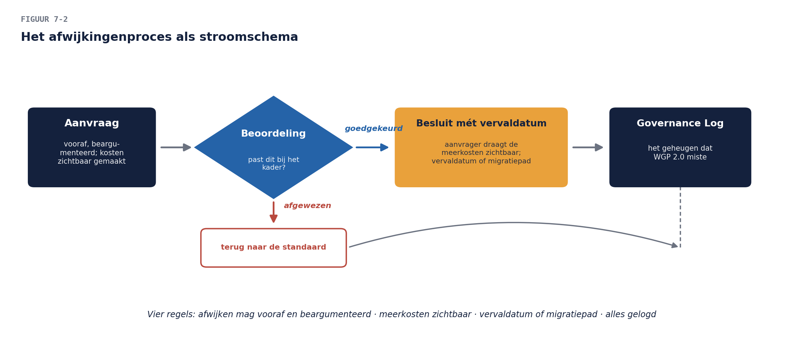

Eductus.Business- en enterprise-architectuur · Deel 7
Voortgang 0%
Cursus Business- en enterprise-architectuur · Niveau 1 (OGEA-101) · Deel 7 van 30
Fase D: technologiearchitectuur
Bij de voorbereiding van het werkgeversdossier stuit je op de erfenis van WGP 2.0 in haar meest tastbare vorm: de drie deelprojecten kozen drie verschillende technologiestacks. Eén draait er nog (de WG-Upload-Tool), één is half afgebouwd blijven staan op een server die niemand durft uit te zetten, en de derde bestaat alleen nog als licentiefactuur die jaarlijks stilzwijgend verlengd wordt.
7secties
±2uleestijd + werkboek
4controlevragen
7leerdoelen
Positionering. Deze cursus bereidt voor op TOGAF® EA Foundation (OGEA-101) en ArchiMate® 3 Part 1 en vervangt het officiële examenmateriaal van The Open Group niet. Examenstof: doel en inhoud van fase D, technologiestandaarden, de Standards Library. Dit deel is bewust het minst technische technologiedeel dat je ooit zult volgen: het gaat over besturing van technologie, niet over technologie zelf.
Niveau 1: ① Wat is business- en enterprise-architectuur? → ② De ADM: de motor van TOGAF → ③ Fase A: stakeholders, concerns en de architectuurvisie → ④ Fase B: businessarchitectuur → ⑤ Fase C: dataarchitectuur → ⑥ Fase C: applicatiearchitectuur → ⑦ Fase D: technologiearchitectuur (hier) → ⑧ ArchiMate basis: de kernlagen modelleren → ⑨ Fase E t/m H: principes, standaarden en governance-basis → ⑩ Examentraining en capstone: de architectuurvisie verdedigd
01
Casus: drie stacks en een gewetensvraag
⏱ 14 min
Bij de voorbereiding van het werkgeversdossier stuit je op de erfenis van WGP 2.0 in haar meest tastbare vorm: de drie deelprojecten kozen drie verschillende technologiestacks. Eén draait er nog (de WG-Upload-Tool), één is half afgebouwd blijven staan op een server die niemand durft uit te zetten, en de derde bestaat alleen nog als licentiefactuur die jaarlijks stilzwijgend verlengd wordt.
Als je navraagt hoe die keuzes destijds tot stand kwamen, krijg je drie antwoorden: “de ontwikkelaars kenden dat framework al”, “de leverancier bood een pakketdeal”, en — het eerlijkste — “er was niemand die er iets van vond”. Dat laatste is B5 in één zin: het probleem was nooit dat er verkeerd gekozen werd, het probleem was dat er niet gekózen werd — er werd slechts gepakt wat voorhanden was, drie keer, onafhankelijk.
De directie wil nu het omgekeerde uiterste: “gewoon één standaard voor alles, en daar wijkt niemand meer van af.” Vandaag leer je waarom óók dat het foute antwoord is — en wat het goede is.
Figuur 7-1 — De erfenis — drie stacks, één draait, één staat, één is alleen nog een factuur
02
Waarom fase D als laatste domein komt
⏱ 18 min
De volgorde-redenering uit deel 2 voltooit zich hier: technologie dient de applicaties, de applicaties dienen de gegevens en processen, die dienen de business. Fase D als laatste betekent níet dat technologie onbelangrijk is — het betekent dat technologiekeuzes hun rechtvaardiging van boven halen. “Welk platform?” is pas beantwoordbaar als je weet welke applicaties erop moeten draaien, met welke gegevens, voor welke stromen, onder welke eisen.
De praktijk is weerbarstiger, en dat mag gezegd: soms ís er al een platform (het pensioenlandschap draait niet op wensdenken), soms dwingt een leverancier een richting af, soms komt een technologiekans éérst en zoekt de business er een toepassing bij. De ADM vangt dat met iteratie (deel 2, §4): fase D-inzichten mogen terugslaan op C en B. Wat overeind blijft is de bewijslast: een technologiekeuze zonder redenering vanuit de bovenliggende lagen is een B5 in wording — ook als de keuze toevallig goed uitpakt.
Voor het denken zelf gebruikt fase D de technologiedienst als eenheid: niet “wij hebben product X van leverancier Y” maar “wij hebben een dienst ‘berichtenuitwisseling’ / ‘gegevensopslag’ / ‘identiteitsbeheer’, met eisen, en product X vult die dienst nu in”. Herken het patroon — het is ABB versus SBB (deel 2) op technologieniveau: de dienst is de behoefte, het product de invulling. Producten komen en gaan; de dienst blijft. Wie in producten denkt, schrijft zijn architectuur in vergankelijke inkt.
Controlevragen
Uit Werkboek deel 7, Opdracht 4, Opdracht 5
1Een leverancier biedt “99,99% beschikbaarheid, gegarandeerd”. Welke twee vragen stel je vóór je onder de indruk bent — en welke van jullie eisen dekt die garantie waarschijnlijk níet?Toon antwoord
a. Modeleisen: beschikbaarheid — laatste drie werkdagen van de maand ≤ 4 uur onderbreking (herkomst: maandpiek/aanleverpijn) · herstelbaarheid — geen aanlevering gaat verloren; na storing hervat verwerking zonder dubbeling (herkomst: rangorde-gesprek; dít is de “nooit”) · security — authenticatie conform IAM-beleid, afwijkingen vooraf langs CISO (herkomst: deel 3, letterlijk haar concern) · actualiteit doorlevering — mutaties die het deelnemerdomein raken binnen 24 uur gesignaleerd (herkomst: de grensafspraak van deel 5). b. Als eerste versoepelbaar: beschikbaarheid búiten de maandpiek (een dinsdagochtend-storing midden in de maand is vervelend, geen ramp). Nooit: herstelbaarheid — een kwijtgeraakte aanlevering is onzichtbare schade die weken later als B7-achtige verrassing terugkomt; beschikbaarheidsverlies is zichtbaar en herstelbaar, gegevensverlies niet. c. De twee vragen: “99,99% waarván — het platform, of onze dienst inclusief koppelingen?” en “gemeten hoe en wanneer — jaargemiddelde, of juist op ónze piek?” De garantie dekt vrijwel zeker de herstelbaarheidseis niet: beschikbaarheid zegt niets over verlies van in-flight aanleveringen bij een storing. Les: leverancierscijfers beantwoorden leveranciersvragen; jouw eisen komen uit jouw concerns.
2Het MT vraagt “moeten we PremiePlus niet gewoon gaan vervangen?” Beantwoord met de reader-lijn (exit-optie versus vervanging) én benoem onder welke omstandigheid het antwoord wél “vervangen” zou worden.Toon antwoord
a. Concentratie: zeven capabilities incl. het bestaansrecht — hoog. Afhankelijkheid: contractueel (looptijd? onderzoeksvraag, eigenaar: inkoop), technisch (zijn de gegevens er in overdraagbare vorm uit te krijgen? de bronnenkaart zegt deels — onderzoeksvraag, eigenaar: dataarchitect), kennis (parametrisering zit bij twee mensen + leverancier — casusfeit-achtig aannemelijk, markeren). Alternatief: er bestaan branchepakketten; geloofwaardigheid onbeoordeeld — onderzoeksvraag. b. Modelprogramma: (1) gegevensexport in standaardformaten periodiek getest (bronnenkaart als exit-instrument) · (2) nieuwe koppelvlakken op de ontsluitingsstandaard, nooit leverancierseigen (deel 6-richting dient ook de exit) · (3) parametrisering en maatwerk gedocumenteerd in het eigen beheer (kennisborging) · (4) contractherijking op vaste momenten mét marktverkenning op tafel. c. Model-DNB-alinea: feitelijk registreren wat is vastgesteld (concentratie benoemd, drie afhankelijkheidsassen beoordeeld, onderzoeksvragen belegd met termijn), welke maatregelen lopen (het vierpuntsprogramma), en wanneer herbeoordeling plaatsvindt. Geen “wij zijn ervan overtuigd dat” — toezichthouders lezen beheersing af aan proces en bewijs, niet aan stelligheid. d. Modelantwoord: vervangen is de duurste en riskantste beheersmaatregel en pas aan de orde als de exit-analyse daar zélf op uitkomt — bijvoorbeeld wanneer de leverancier de overdraagbaarheid blokkeert, de roadmap doodloopt op de doelarchitectuur, of de kennisafhankelijkheid onhoudbaar blijkt. Tot die tijd: exit-optie onderhouden. De omslagconditie expliciet benoemen is het volwassen deel van het antwoord — “nooit vervangen” is even dogmatisch als “meteen vervangen”.
03
Het standaardenkader: de plank en de regels
⏱ 26 min
Wat er op de plank ligt
Het hart van fase D voor een organisatie als Meridiaan is geen infrastructuurtekening maar het standaardenkader: per technologiedienst de vastgestelde invulling(en), gepubliceerd in de Standards Library (deel 2 — hier krijgt die zijn inhoud). De gangbare indeling per standaard:
De dienst die hij invult (identiteitsbeheer, berichtenuitwisseling, gegevensopslag, applicatieplatform, rapportage…).
De status:verplicht (hier bouw je op), aanbevolen (goede default, gemotiveerd afwijken kan), gedoogd (bestaand gebruik mag blijven, nieuw gebruik niet — de uitsterfstatus), verboden (ook bestaand gebruik moet weg, met einddatum).
De geldigheid: wie heeft hem vastgesteld, wanneer, en wanneer wordt hij herzien.
De statussen zijn het venijn en de kracht. “Gedoogd” is de status die de meeste organisaties missen en het hardst nodig hebben: zonder haar is elke bestaande afwijking óf illegaal (en gaat ondergronds — het schaduwpatroon kent inmiddels iedereen) óf stilzwijgend legitiem (en groeit). Gedoogd zegt: dit bestaat, dat weten we, het mag blijven draaien, maar het krijgt geen nieuwe bewoners. De WG-Upload-Tool-stack krijgt precies die status — met de mijlpaalgebonden vervaldatum uit deel 6.
Hoe standaarden ontstaan en sterven
Een standaard is een besluit, en besluiten hebben een levenscyclus: voorgesteld (door wie dan ook — vaak een project dat iets nieuws nodig heeft) → beoordeeld (past hij bij de diensten en eisen? wat kost een extra standaard aan beheer?) → vastgesteld (door het gremium dat deel 9 inricht) → periodiek herzien → uitgefaseerd via gedoogd naar verboden. Twee ontwerpprincipes voor het kader zelf:
Zo min mogelijk standaarden, zo veel mogelijk gedekt. Elke extra standaard voor dezelfde dienst verdubbelt beheerlast en halveert schaalvoordeel. De vraag bij elk voorstel is niet “is dit een goed product?” maar “is de dienst niet al gedekt — en zo ja, wat rechtvaardigt een twééde invulling?”
De standaard dient de bouwer. Een kader dat alleen verbiedt, wordt omzeild; een kader dat de standaardroute óók de makkelijkste route maakt (voorgeïnstalleerd, gedocumenteerd, ondersteund), wordt gevolgd. De wortel verslaat de stok — deel 19 werkt dit uit voor de agile praktijk.
Afwijken: het proces dat het kader redt
Nu de gewetensvraag van de directie. “Niemand wijkt meer af” klinkt sterk en is de zwakste governance die er bestaat, om twee redenen. Ten eerste: er zíjn legitieme afwijkingen — een pakket dat op een niet-standaard database draait maar functioneel verreweg het beste is; een experiment dat juist búiten de standaard iets moet proberen. Ten tweede: een verbod zonder ventiel bouwt druk op, en druk zoekt een uitweg — ondergronds. Het is de derde keer dat dit patroon langskomt (begrippen, kopieën, nu technologie) en het heeft dezelfde oplossing: maak de uitzondering legaal, expliciet en duur genoeg.
Het afwijkingenproces in vier regels:
Afwijken mag — vooraf en beargumenteerd. De aanvraag beschrijft welke standaard, waarom die niet volstaat, en wat de afwijking kost (extra beheer, kennis, exit).
De aanvrager draagt de meerkosten zichtbaar. Niet als straf, maar als eerlijke prijs: de afwijking is een keuze van het project, dus de last hoort bij het project — dat disciplineert beter dan elk verbod.
Elke afwijking krijgt een vervaldatum of een migratiepad. Een afwijking zonder einde is een nieuwe, ongewilde standaard in wording.
Alles staat in het Governance Log. Wie over drie jaar vraagt “waarom draait dit hier op X?”, vindt het antwoord — het geheugen dat WGP 2.0 miste (B9’s technologiehelft).
Vergelijk met WGP 2.0: daar was afwijken niet verboden en niet toegestaan — het bestond gewoon niet als categorie, want er was geen kader om ván af te wijken. B5 is niet opgelost door standaarden vast te stellen; B5 is opgelost door standaarden plus het afwijkingenproces plus het log. Het kader zonder ventiel faalt door explosie; het ventiel zonder kader is WGP 2.0.

Figuur 7-2 — Het afwijkingenproces als stroomschema — aanvraag → beoordeling → besluit mét vervaldatum → Governance Log
Controlevraag
Uit Werkboek deel 7, Opdracht 2
1De directie vraagt waarom er überhaupt een “aanbevolen”-status is — “óf het is verplicht, óf het is vrij.” Verdedig de tussencategorie in maximaal vier zinnen, met één concreet Meridiaan-voorbeeld.Toon antwoord
a-b. Modelkader (vijf regels): identiteitsbeheer → IAM-Suite, verplicht (CISO-lijn; herzien tweejaarlijks) · applicatieplatform web → [doelplatform kanaal], verplicht voor nieuwbouw; oude framework Upload-Tool → gedoogd, uitsterfpad = livegang kanaal · gegevensuitwisseling → ontsluiting via services aanbevolen, bestandsgebaseerd gedoogd met uitsterfpad per gesaneerde stroom (deel 6, opdracht 4) · gegevensopslag → Oracle aanbevolen (geen reden tot afbouw, wel heroverweging bij PremiePlus-besluiten) · documentgeneratie → DocGen verplicht. Vaststeller: “gremium — inrichting volgt in deel 9” is het juiste antwoord; wie een naam invult, loopt op de governance vooruit. c. De half afgebouwde stack: status verboden met einddatum is verleidelijk maar prematuur — eerst het WGKOP-antwoord: onderzoeken wat er draait en of iets erop steunt (de server die “niemand durft uit te zetten” is een B3-restje: angst is een symptoom van onwetendheid). Eerste actie: onderzoeksopdracht mét eigenaar en termijn; daarná verboden/einddatum. De licentiefactuur die stilzwijgend verlengd wordt: per direct agenderen — dát besluit kan wel meteen. d. Modelverdediging: “Aanbevolen” bestaat voor diensten waar één goede default hoort maar gemotiveerd maatwerk legitiem is — bij ‘verplicht’ zou elke legitieme uitzondering het afwijkingenproces in moeten (bureaucratie voor voorspelbare gevallen), bij ‘vrij’ verdampt het schaalvoordeel. Voorbeeld: gegevensopslag — Oracle als default scheelt kennis- en beheerversnippering, maar een pakket dat alleen op een andere database draait, hoeft geen afwijkingsprocedure te doorlopen als het pakket zelf de standaardtoets doorstond. Aanbevolen = “wijk af als je een goede reden hebt, en die reden willen we horen — vooraf maar licht.”
04
Niet-functionele eisen: de taal van fase D
⏱ 16 min
Waar fase B in capabilities spreekt en fase C in gegevens en services, spreekt fase D in kwaliteitseigenschappen: beschikbaarheid, schaalbaarheid, security, herstelbaarheid, performance. Ze heten “niet-functioneel” en zijn het meest functionele wat er is: het verschil tussen een aanleverkanaal dat de laatste dag van de maand overeind blijft (wanneer álle werkgevers tegelijk aanleveren) en een kanaal dat dan plat gaat, zit volledig in deze eisen.
De architectuurdiscipline: eisen komen van boven — uit de concerns (deel 3) en de business services (deel 4) — en worden toetsbaar geformuleerd, per dienst. “Het kanaal moet goed beschikbaar zijn” is een verzuchting (het patroon van deel 5); “het aanleverkanaal is op de laatste drie werkdagen van de maand beschikbaar met maximaal vier uur onderbreking, en een mislukte aanlevering is nooit kwijt” is een eis waar je een platform op kunt kiezen — en afrekenen. Let op de tweede helft van die eis: herstelbaarheid (geen aanlevering kwijt) is voor Meridiaan belangrijker dan maximale beschikbaarheid, en dat soort rangordes — wat mag falen, wat nooit — is precies het gesprek dat fase D met de business voert. De CISO-concerns van deel 3 landen hier eveneens: security-eisen zijn kwaliteitseigenschappen als alle andere, vooraf in het kader (het antwoord dat haar in deel 3 beloofd werd).
05
Leveranciers en concentratie: het risico op de kaart
⏱ 18 min
De TIME-tabel van deel 6 gaf PremiePlus een aantekening: zeven capabilities op één systeem. Fase D maakt daar een risico-oordeel van, langs drie vragen:
Concentratie: wat valt er om als dit omvalt? (Zeven capabilities, waaronder premie-inning — het bestaansrecht.)
Afhankelijkheid: hoe vast zit Meridiaan aan de leverancier — contractueel (looptijd, voorwaarden), technisch (proprietary formaten? de gegevens eruit te krijgen? — de bronnenkaart van deel 5 wordt hier exit-instrument), en qua kennis (kan alleen de leverancier het aanpassen)?
Alternatief: wat is het geloofwaardige uitwijkscenario, en wat kost het om dat geloofwaardig te hóuden?
Het architectuurantwoord op leveranciersrisico is zelden “vervangen” (de remedie kan erger zijn dan de kwaal) en vrijwel altijd: de exit-optie onderhouden. Concreet: gegevens in overdraagbare vorm beschikbaar (de ontsluiting van deel 6 dient ook dit doel), koppelvlakken op standaarden in plaats van leverancierseigen formaten, kennis gedocumenteerd, en het contract periodiek herijkt mét dat alternatief op tafel. Een organisatie met een onderhouden exit-optie hoeft zelden te vertrekken — juist omdat de leverancier dat weet. Voor een pensioenuitvoerder is dit bovendien geen vrije keuze: de toezichthouder (DNB — daar is de verschuivende stakeholder van deel 3) verwacht aantoonbare beheersing van uitbestedings- en concentratierisico’s.
06
Baseline en target voor het werkgeversdossier
⏱ 14 min
Fase D levert voor het dossier op hoofdlijnen:
Baseline: de drie-stacks-erfenis in kaart (welke diensten, welke producten, welke status verdienen ze), de PremiePlus-afhankelijkheid beoordeeld, de niet-functionele werkelijkheid gemeten (wat ís de beschikbaarheid op de maandpiek?), en de eerste Standards Library gevuld — grotendeels met wat er feitelijk al is, eerlijk gestatust: veel “gedoogd”, weinig “verplicht”, en dat is voor een eerste versie precies goed.
Target: het nieuwe aanleverkanaal op de vastgestelde standaarden (de eerste bouwsteen die vanaf dag één binnen het kader ontstaat — symbolisch én praktisch), de identiteitsdienst op de IAM-Suite (de CISO-standaard), de uitstervende stacks op gedoogd-met-vervaldatum, en de niet-functionele eisen per dienst vastgesteld en meetbaar.
En daarmee is het viertal compleet: business (4), data (5), applicatie (6), technologie (7) — elk met baseline, target en gap. Deel 8 geeft dit alles één tekentaal; deel 9 bouwt de besturing die het geheel levend houdt. De zeven bevindingen zijn op de governance-restanten na gesloten.
07
Samenvatting
⏱ 24 min
Fase D komt als laatste omdat technologiekeuzes hun rechtvaardiging van boven halen; de praktijk mag iteratief zijn, de bewijslast blijft.
Denk in technologiediensten (blijvend), niet in producten (vergankelijk) — ABB/SBB op technologieniveau.
Het standaardenkader werkt met statussen; “gedoogd” is de onmisbare uitsterfstatus. Zo min mogelijk standaarden, en de standaardroute is de makkelijkste route.
B5 is opgelost door kader + afwijkingenproces + log: afwijken mag, vooraf, beargumenteerd, tegen zichtbare meerkosten, met vervaldatum. Het kader zonder ventiel faalt door explosie; het ventiel zonder kader is WGP 2.0.
Niet-functionele eisen zijn de taal van fase D: toetsbaar, per dienst, van boven afgeleid — inclusief de rangorde wat mag falen en wat nooit.
Leveranciersrisico beantwoord je met een onderhouden exit-optie, niet met reflexmatige vervanging; voor een pensioenuitvoerder is die beheersing ook een toezichtseis.
Het domeinviertal is compleet; deel 8 geeft de taal, deel 9 de besturing.
Begrippenlijst
Begrip
Omschrijving
Technologiedienst
de behoefte-eenheid van fase D (“identiteitsbeheer”); producten vullen haar in
Standards Library
de gepubliceerde standaarden per dienst, met status en geldigheid
vooraf, beargumenteerd, meerkosten zichtbaar, vervaldatum, in het log
Niet-functionele eisen
toetsbare kwaliteitseigenschappen per dienst, van boven afgeleid
Concentratierisico
wat valt om als dit omvalt — capability-gewicht per systeem/leverancier
Exit-optie
het onderhouden, geloofwaardige uitwijkscenario als beheersmaatregel
Verder lezen
The Open Group, TOGAF® Standard, 10th Edition — Phase D en de Standards Library (examenstof)
DNB-guidance uitbesteding en informatiebeveiliging — de toezichtkant van §5 (achtergrond; geen examenstof)
Volgende deel: ArchiMate — één tekentaal voor alles wat je in de delen 4 t/m 7 hebt beschreven. Neem je artifacts mee: ze gaan op de tekentafel.
Controlevraag
Uit Werkboek deel 7, Opdracht 3
1Deze aanvraag is inhoudelijk stérk (het businessdoel rechtvaardigt de afwijking). Wat zegt het over het kader zelf als zulke aanvragen vaak voorkomen — en welk proces uit §3.2 hoort dan aan te slaan?Toon antwoord
a. Modelvelden: aanvrager + project · betrokken standaard/dienst · gevraagde afwijking · waarom de standaard niet volstaat (het dóel van de standaard geadresseerd, niet alleen de regel) · meerkosten en wie ze draagt · looptijd/vervaldatum of migratiepad · gevraagde uitkomst (tijdelijk/permanent/experiment) · besluit + logverwijzing. Acht velden, vier regels gedekt. b-c. De aanvraag is sterk omdat zij het doel raakt: businessbeheer van validatieregels ís de target (stewards, deel 5) en de standaardroute kan het niet. Modeluitkomst rollenspel: toewijzen met condities (regelengine wordt kandidaat-standaard voor de dienst “regelbeheer” — zie d; koppelvlakken op de bestaande standaarden; kennisborging geregeld) óf escaleren met positief advies (netjes: het raakt een kaderuitbreiding, dat is gremium-werk). Afwijzen-met-alternatief is hier het zwakke antwoord — de observant moet zien of de architect het doel woog of de regel verdedigde. d. Als sterke aanvragen zich herhalen, is de afwijking geen afwijking maar een ontbrekende standaard: het voorstel-proces uit §3.2 hoort aan te slaan (de dienst “regelbeheer” bestond niet in het kader — de aanvraag ís het voorstel). Een gezond kader leert van zijn afwijkingen; een kader dat elke sterke aanvraag als bedreiging behandelt, kweekt zijn eigen ondergrondse.
Verder naar deel 8
Deel 8 gaat verder met: ArchiMate basis: de kernlagen modelleren.